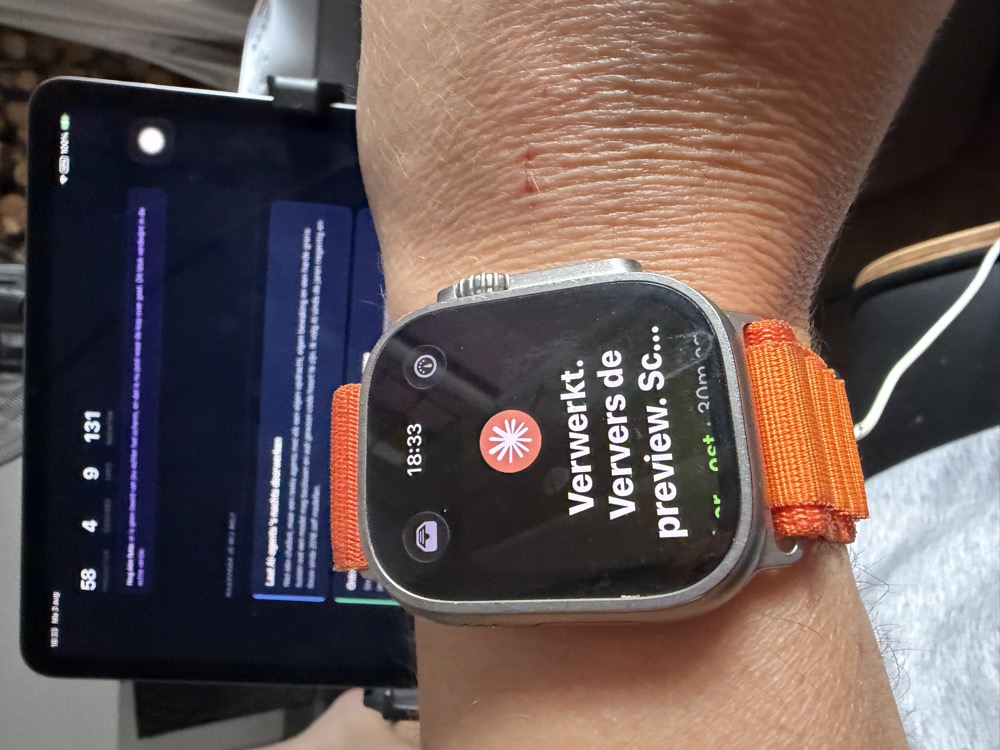
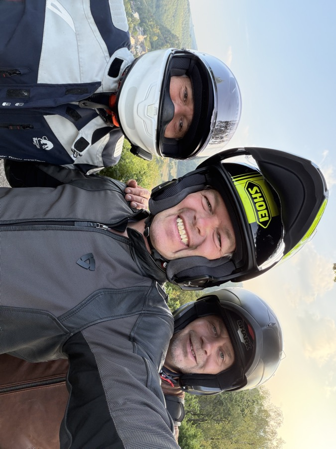
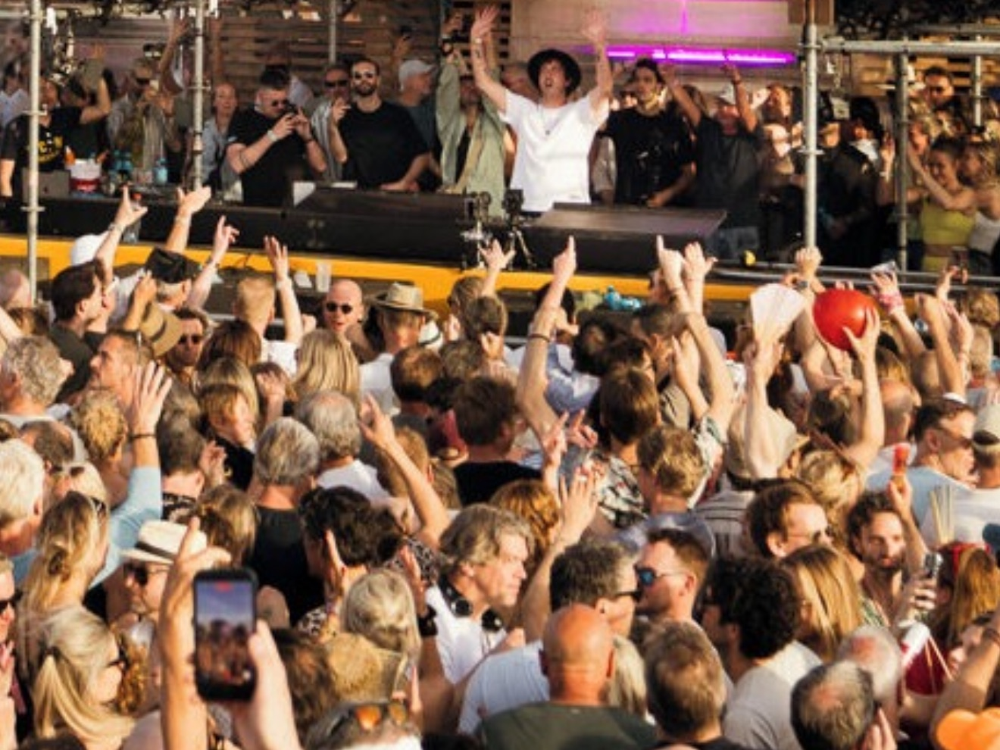
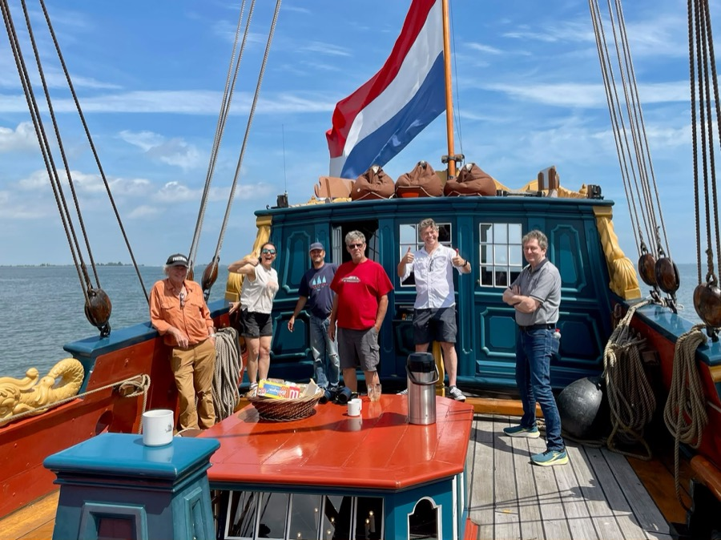
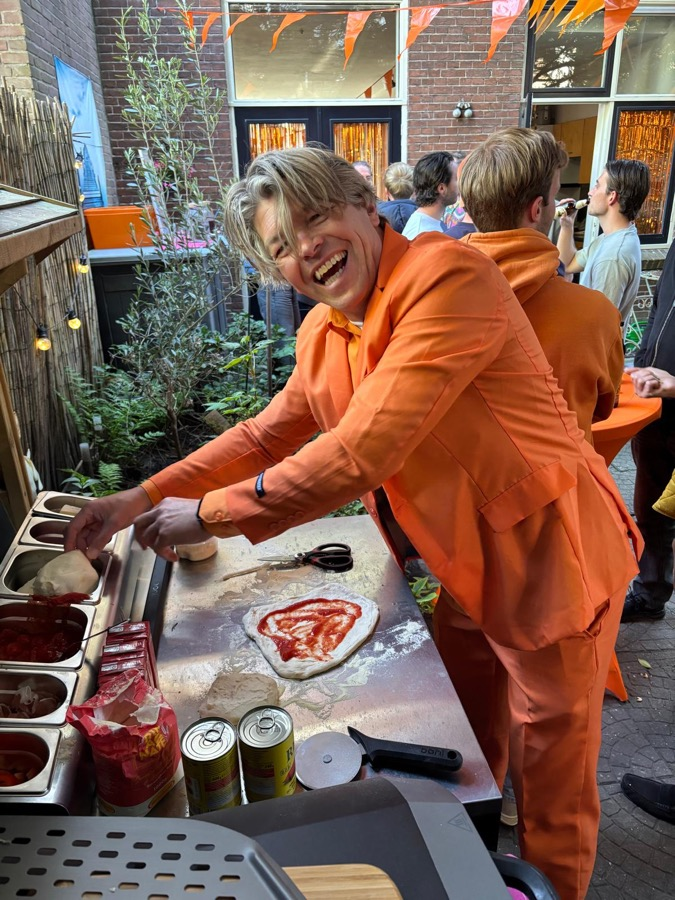

Innovatieconsultant en business analist uit Utrecht.
Ik zet AI-agents aan het werk en kijk 's ochtends wat ze gemaakt hebben.
Alles hieronder is het resultaat.
—
producten
—
dossiers
—
apps
—
nachten
Hoe dat er dan uitziet

Geen bureau
Een melding op mijn horloge dat er iets af is, een iPad om te kijken of het klopt.
Het werk gebeurde 's nachts, terwijl ik sliep.
Deze foto is gemaakt terwijl deze pagina werd gebouwd.
Waarvoor je mij belt
Laat AI-agents 's nachts doorwerken
Niet één chatbot, maar een reeks agents met elk een eigen opdracht, eigen bewaking en een
harde grens tussen wat een model mag beslissen en wat gewoon code hoort te zijn.
Ik volg AI sinds de jaren negentig en bouw sinds 2016 zelf modellen.
Ontrafel wat er echt speelt voordat er iemand gaat bouwen
Sinds 1997 tussen business en techniek: tien jaar Capgemini, zes jaar senior
innovatiemanager bij KPN, zes jaar mijn eigen bureau, en vijf jaar senior business
consultant bij Ordina. Onderweg Ziggo, ABN AMRO, Tele2, Vodafone Duitsland, de Politie,
Nuffic, het ministerie van BZK en Rabobank. Overzicht scheppen waar het onoverzichtelijk
is: de vraag achter de vraag, de eis die niemand opschreef, en de kleinste versie die het
probleem al oplost.
Leg het uit aan wie het moet snappen
Hetzelfde verhaal werkt niet voor een marketeer, een engineer en een klant. Ik schakel
tussen die drie. Dat hoef je niet te geloven: hieronder staan tientallen uitleggingen
van complexe dingen, elk gericht op wie het moet begrijpen.
Van buitenstaander naar gesprekspartner
Een vakgebied in duiken tot ik met de specialisten kan meepraten, met bronnen erbij.
Ik deed het voor mobiele technologie, voor bitcoin in 2013 en voor deep learning in 2016.
Het meest recent voor de genetica van mijn eigen gehoorverlies, en daar kwam een lopend
labonderzoek uit.
Drie keer uitgewerkt
Van frustratie naar App Store
Versta
Probleem
Op een dansvloer raak ik de draad kwijt, terwijl de mensen om me heen elkaar nog
gewoon volgen.
Wat ik deed
Eerst een prototype, om te zien of live ondertiteling in dat lawaai überhaupt kon.
Toen ik het daarna wilde verbeteren, merkte ik dat ik zat te gokken. Dus bouwde ik
een meetopstelling: vaste zinnen, ruis van pratende mensen over studiomonitors, het
woordfoutpercentage als enige maat. De uitkomst was onaangenaam en nuttig, want geen
enkele softwaretruc versloeg de kale basisversie. De winst zat in de microfoonrichting,
van 13,3% naar 6,0% fout.
Nu
Live in de App Store in 175 landen, volledig op het toestel zelf.
Erfelijk gehoorverlies met een bekende diagnose maar een onbekend mechanisme.
En juist dat mechanisme bepaalt welke therapie überhaupt zin heeft.
Wat ik deed
Mijn hele genoom laten uitlezen en zelf geanalyseerd, tot ik de variant vond die het
waarschijnlijk veroorzaakt. Vijf onafhankelijke modellen gaven hetzelfde antwoord.
Daarna ben ik gaan zoeken naar het beste bewijs dat ik het mís had. Dat vond ik ook,
dus de vraag staat nog open.
Nu
Het diagnostische panel is akkoord, de RNA-analyse loopt in een academisch lab, en er
ligt een paper klaar die op die uitslag wacht.
Een authentieke replica uit 1746, onderhouden door vrijwilligers en gevaren met een
betaalde schipper en maat, met boekingen en offertes die per mail heen en weer gingen.
Wat ik deed
Een boekingspagina met offerte-flow gebouwd en aangesloten op de agenda, inclusief
beheerkant. Betalingen bewust uitgesteld tot er een besluit lag, in plaats van ze
erin te bouwen omdat het kon.
Jouw input: streep door wat niet klopt of te dik is aangezet.
Lopende dossiers
Apps
Al het werk
Bezig met ophalen…
Buiten kantooruren

Elektrisch motorrijden
Zero DSR/X. De Ardennen door met twee vrienden, als enige met een laadplanning.

Dansvloeren
DGTL, Soenda, Loveland. Versta is hier letterlijk ontstaan.

Statenjacht De Utrecht
Vrijwilliger in het onderhoudsteam. Maandagen in de winter, met schuurpapier.

Pizza napoletana
En zuurdesem. Elk jaar een pizzafeest op mijn verjaardag, die op Koningsnacht valt.
Verder: Krav Maga op donderdag in Utrecht, een werkplaats die nooit af is,
negen generaties stamboomonderzoek, en twee katten die Muji en Kuji heten en
niets aan het portfolio bijdragen.
Contact
Iets te bouwen, te ontrafelen of uit te zoeken? Mail me.